Contents
close all
[s,Fs,] = audioread('fantasia.wav');
Ts = 1/Fs;
figure;
plot([0:length(s) - 1]*Ts, s,'g');
axis tight
xlabel("Tiempo [s]");
title("Señal original");
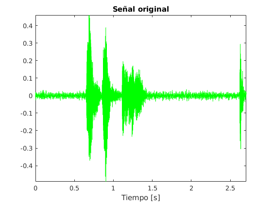
calcular coeficientes LPC y error
n_0 = 1;
n_f = 400;
N = 400;
z_i = [];
M = 20;
coeficientes = [];
error_total = [];
ges = [];
while n_0 < length(s)
s_w = s(n_0:n_f);
rhos = xcorr(s_w);
rhos1 = rhos(N:N+M-1);
rhos2 = rhos(N+1:N+M);
matriz = toeplitz(rhos1);
inversa = inv(matriz);
bes = inversa*rhos2;
G = sqrt(rhos1(1)-bes.'*rhos2);
bext = [1, (-bes).'];
[error,z_i] = filter(bext,1,[s_w(1:160).'],z_i);
coeficientes = [coeficientes; bes.'];
error_total = [error_total; error];
ges = [ges;G];
n_0 = n_0 + 160;
n_f = n_f + 160;
if n_f > length(s)
break
end
end
para la ventana de la muestra 14000 aprox.
N_DFT = 1024;
figure;
k = 90;
s_w = s(1+160*(k-1):160*(k-1)+400);
G = ges(k);
dft = fft(s_w,N_DFT);
frec = ([0:N_DFT-1]*(2*pi/N_DFT))/(2*pi)/Ts;
y = abs(dft);
plot(frec(1:N_DFT/2),y(1:N_DFT/2),'r');
hold on;
bes = coeficientes(k,:);
[h,w] = freqz(G,[1, (-bes)],N_DFT);
frec = w/(2*pi)/Ts;
y = abs(h);
plot(frec,y,'b');
xlabel('Frecuencia [Hz]');
title('DFT señal original y envolvente LPC')
[pks,loc] = findpeaks(y);
hold on;
pks = pks(1:2);
loc = loc(1:2);
plot(frec(loc),pks,'bo','markerfacecolor','b');
str = sprintf('%g , %g Hz', round(frec(loc(1))), round(frec(loc(2))));
legend('Original','LPC',str);
figure;
plot(([0:399]+160*(k-1))*Ts,s_w,'r');
hold on
s_p = filter(bes,1,[0,s_w.']);
s_p = s_p(1:end-1);
plot(([0:399]+160*(k-1))*Ts,s_p,'b');
xlabel('Tiempo [s]');
legend('Original','Predicción');
title('Señal original y señal predicha');
figure;
er = s_w.'-s_p;
plot(([0:399]+160*(k-1))*Ts,er,'r');
xlabel('Tiempo [s]');
title('Error entre señal original y señal predicha');
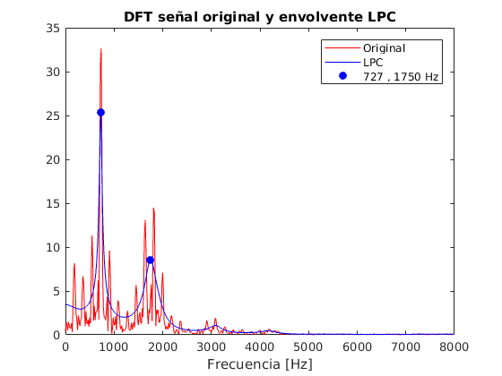 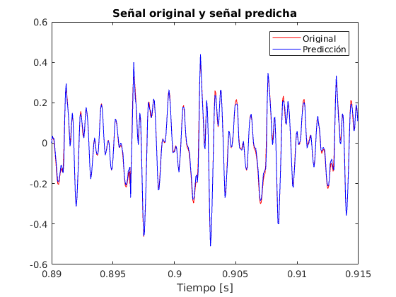 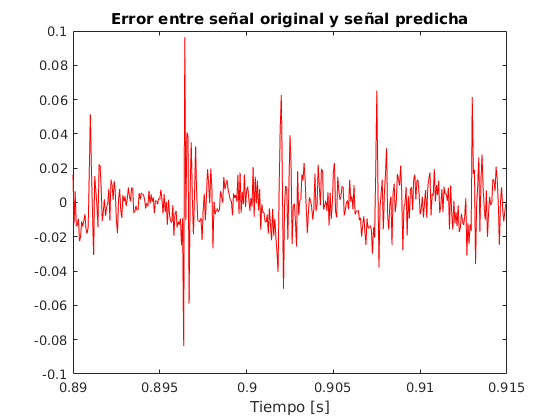
envolventes de las vocales
k_a_1 = 70;
k_a_2 = 90;
k_i = 112;
k_a_3 = 133;
figure;
col = ['r','b','g','k'];
ks = [k_a_1,k_a_2,k_i,k_a_3];
x = [];
ys = [];
for i = 1:4
k = ks(i);
bes = coeficientes(k,:);
[h,w] = freqz(G,[1, (-bes)],1000);
frec2 = w/(2*pi)/Ts;
x = frec2;
y2 = abs(h);
ys = [ys;y2.'];
plot(frec2,y2,col(i),'linewidth',2);
hold on
end
xlabel('Frecuencia [Hz]');
title('Envolventes de las vocales')
strs = [];
for i = 1:4
[pks,loc] = findpeaks(ys(i,:));
pks = pks(1:3);
loc = loc(1:3);
plot(x(loc),pks,strcat(col(i),'o'),'MarkerFaceColor', col(i));
str = sprintf('%g, ',x(loc));
str = str(1:end-2);
str = strcat(str, ' Hz');
str = string(str);
strs = [strs;str];
hold on
end
legend('a [1]', 'a [2]','i', 'a [3]',strs(1),strs(2),strs(3),strs(4));
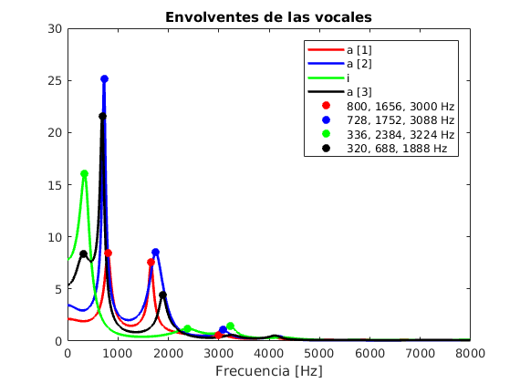
superficie de envolventes y espectrograma
error = error_total;
n_ventanas = size(error,1);
figure;
spectrogram(s(1:160*n_ventanas),160,[],[],Fs,'yaxis','power');
colormap bone
shading interp
view(2)
title('Espectrograma')
hs = [];
for k = 1:n_ventanas
bes = coeficientes(k,:);
[h,w] = freqz(G,[1, (-bes)],100);
frec = w/(2*pi)/Ts;
y2 = abs(h);
hs = [hs; y2.'];
end
figure;
tiempos = (0:n_ventanas-1)*160*Ts;
surf(tiempos.', frec, log(hs.'));
colormap bone
shading interp
axis tight
view(2)
xlabel('Tiempo [s]')
ylabel('Frecuencia [Hz]')
title('Superficie envolventes')
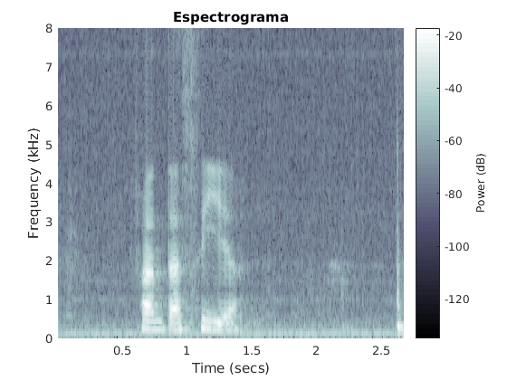 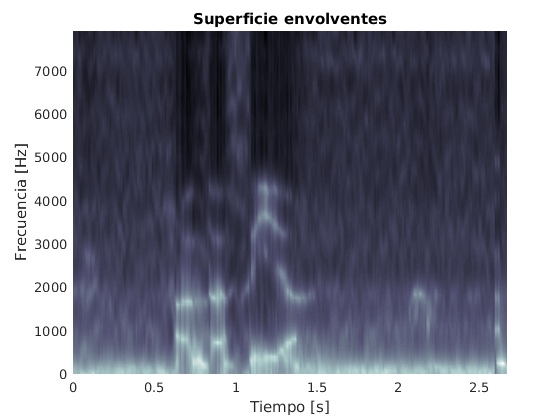
reconstrucción
s_rec_total = reconstruir(coeficientes, error, ges);
figure;
plot([0:length(s_rec_total)-1]*Ts,s(1:length(s_rec_total)),'r');
hold on;
plot([0:length(s_rec_total)-1]*Ts,s_rec_total,'b');
title('Señal original y reconstruida');
xlabel('Tiempo [s]');
axis tight
legend('Original','Reconstruida');
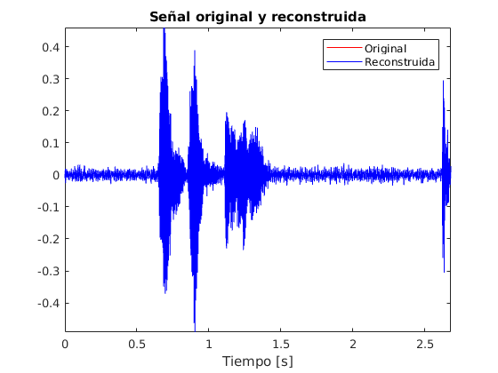
grafico de la señal original y la señal reconstruida desde muestra 14000 hasta 14100
figure;
plot([13999:14099]*Ts,s(14000:14100),'r');
hold on;
plot([13999:14099]*Ts,s_rec_total(14000:14100),'b');
title('Señal original y reconstruida');
axis tight
xlabel('Tiempo [s]');
legend('Original','Reconstruida');
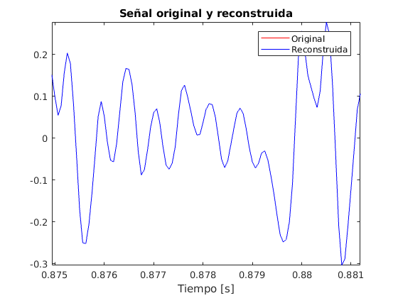
redondeo del error - codificación
figure;
cs = ['r','g','b'];
bs = [4,6,8];
s_rec_red = [];
n_i = 14000;
n_f = 14100;
t = (n_i-1:n_f-1)*Ts;
for i = 1:length(bs)
b = bs(i);
c = cs(i);
error_red = error;
minimo = min(error(:));
error_red = error_red - minimo;
maximo = max(error_red(:));
error_red = error_red/maximo;
B = 2^b;
error_red = round(error_red*(B-1));
error_red = error_red/(B-1);
error_red = error_red*maximo + minimo;
s_rec_red = [s_rec_red; reconstruir(coeficientes, error_red, ges)];
error_w = error_red(:);
error_w = error_w(n_i:n_f);
plot(t,error_w,c,'linewidth',1);
hold on;
end
plot(t,error(n_i:n_f),'k','linewidth',1);
xlabel('Tiempo [s]');
legend('4 bits','6 bits','8 bits','Original');
axis tight;
title('Error original vs redondeado');
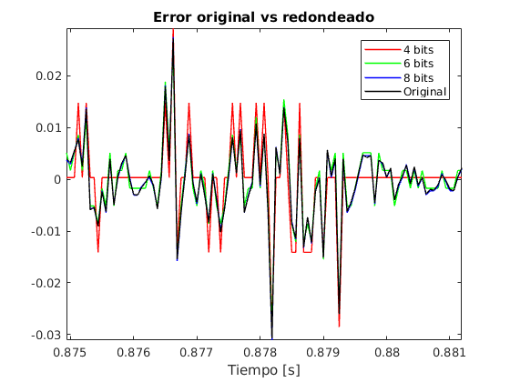
grafico una porción de la señal original y la señal reconstruida, redondeando el error
figure;
for i = 1:3
s_rec_red_w = s_rec_red(i,n_i:n_f);
plot(t,s_rec_red_w,cs(i),'linewidth',1);
hold on;
end
plot(t,s_rec_total(n_i:n_f),'k','linewidth',1);
xlabel('Tiempo [s]');
legend('4 bits','6 bits','8 bits','Original');
axis tight;
title("Señal reconstruida original vs con redondeo de error")
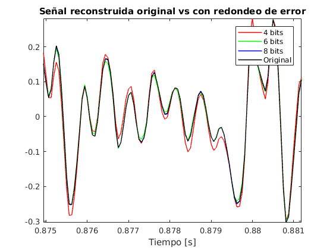
guardo las señales recontruidas
audiowrite('reconstruida.wav',s_rec_total,Fs);
audiowrite('reconstruida_4bits.wav',s_rec_red(1,:),Fs);
audiowrite('reconstruida_6bits.wav',s_rec_red(2,:),Fs);
audiowrite('reconstruida_8bits.wav',s_rec_red(3,:),Fs);
Esto es sólo para comprobar que son iguales; y la diferencia que hay con las que tienen redondeo de error
figure;
plot([0:length(s_rec_total)-1]*Ts, s(1:length(s_rec_total)).' - s_rec_total);
axis tight;
title("Resta entre original y reconstruida");
figure;
plot([0:length(s_rec_total)-1]*Ts, s(1:length(s_rec_total)).' - s_rec_red(1,:));
axis tight;
title("Resta entre original y reconstruida 4 bits");
figure;
plot([0:length(s_rec_total)-1]*Ts, s(1:length(s_rec_total)).' - s_rec_red(2,:));
axis tight;
title("Resta entre original y reconstruida 6 bits");
figure;
plot([0:length(s_rec_total)-1]*Ts, s(1:length(s_rec_total)).' - s_rec_red(3,:));
axis tight;
title("Resta entre original y reconstruida 8 bits");
function s_rec_total = reconstruir(coeficientes, error, ges)
s_rec_total = [];
z_i = [];
n_ventanas = size(error,1);
for i = 1:n_ventanas
bes = coeficientes(i,:);
error_w = error(i,:);
bext = [1, (-bes)];
G = ges(i);
[s_rec,z_i] = filter(1,bext,error_w,z_i);
s_rec_total = [s_rec_total, s_rec];
end
end
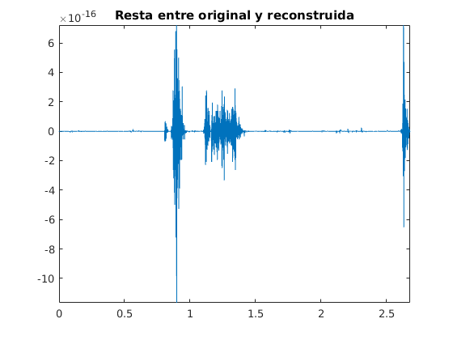 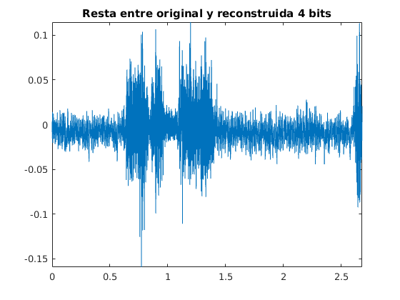 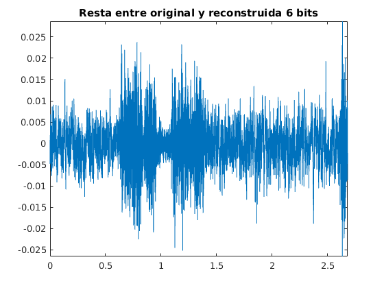 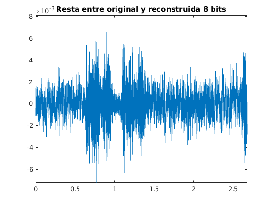